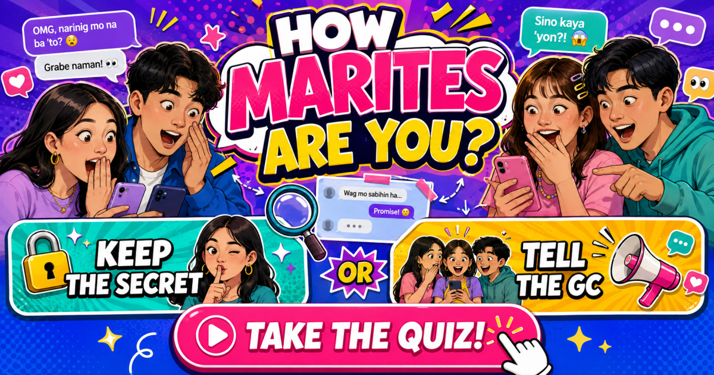

FUN PINOY CHIKA TEST
How Marites
Are You?
Keep the secret or tell the GC?
Pick what you really do in eight familiar Pinoy chika moments.
PICK YOUR HONEST MOVE
YOUR OFFICIAL CHIKA LEVEL

A playful Pinoy chika test
From deleted GC messages to blurry screenshots and surprise updates, every chika moment tests whether you stay calm, investigate, or deliver the full recap.
Choose eight honest answers to unlock one of eight shareable Marites levels and compare your chika style with your barkada.
How Strong Is Your Chika Radar?
A message suddenly disappears. Someone says, “Don't tell anyone.” A screenshot arrives with absolutely no context. The group chat goes quiet at exactly the moment you want to know what happened.
What do you do next?
How Marites Are You? is a playful Filipino personality quiz inspired by chika, group chats, screenshots, secrets and the temptation to find out what everyone is talking about.
It is not about judging whether someone is actually a “Marites.” The game simply turns familiar social situations into eight quick choices.
From Quiet Observer to Chika Expert
Each of the eight situations gives you two possible reactions.
Choose the one that sounds more like what you would actually do. Your answers are combined and matched with one of eight playful Marites levels.
Maybe you would rather stay out of the conversation. Maybe you want to verify the story before believing anything. Or perhaps the words “May chika ako” immediately get your full attention.
There are no correct answers.
Chika Is Better With Friends
Once you see your result, send the quiz to your barkada and compare.
The friend who insists, “Hindi ako Marites!” may end up with the most interesting result of everyone.
And remember: this game is for entertainment. Real people and real stories deserve privacy, so keep the actual chika respectful.